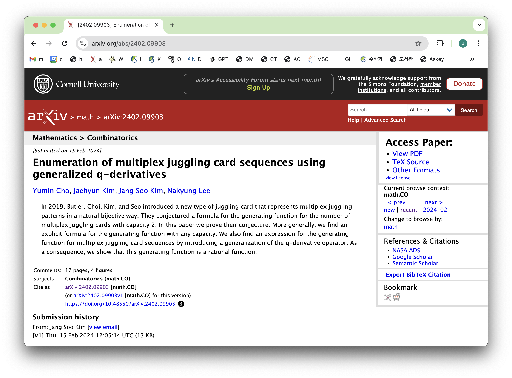

Newbiemacs Tutorial: Level 1
Table of Contents
1. Introduction
- In this tutorial we learn how to manage pdf, tex, and miscellaneous files.
- The basic concept is to store these files in their directories and search them.
- The directories for these files are under the newbiemacs folder.
- To open the newbiemacs folder, type
BACKSPACEtwice and then typeF - The pdf, tex, and miscellaneous files will be stored in the
pdf,tex, andmiscfolders under the newbiemacs folder. - You may manually move your files into one of these folders.
- However, the recommended way is to create symlinks (explained later in this tutorial).
2. How to find a pdf, tex, or miscellaneous file
- Finding a file is very easy.
- Type
p,t, orsin the Newbiemacs screen to find a pdf, tex, or miscellaneous file. - Type anything that you can remember about the file name.
- It will list all files with the key words that you have entered there.
- Choose the file that you want to open and press the enter key.
3. Add new files
- Note that it is important to have a good file name scheme so that we can search files easily.
- The following methods will do this effortelessly.
3.1. How to add a pdf file from arxiv
- Download the pdf file of a paper from https://arxiv.org/ (You must download it into your download folder instead of just viewing it on your browser.)
Copy the two lines of the title and the authors like this:

- Go to your Emacs with the Newbiemacs main screen.
- Type
mand follow the instructions at the bottom of the Emacs screen. - It will save a pdf with name scheme such as "Author 1, Authur 2, Title".
- Now you can search the pdf by typing
pin on the Newbiemacs main screen.
3.2. How to add a pdf file of a published paper
- Download a pdf file into your download folder.
- Go to MathSciNet or its beta version. (The beta version is more convenient.)
Search the paper there. You will see something like this

Click the drop-down box at the top left corner and select bibtex.

Copy the bibtex item.

- Go to your Emacs with the Newbiemacs main screen.
- Type
mand follow the instructions at the bottom of the Emacs screen. - It will save a pdf with name scheme such as "Author 1, Authur 2, Year, Title".
- Now you can search the pdf by typing
pin on the Newbiemacs main screen.
3.3. How to create a new tex file
- Type
nin the Newbiemacs screen. - Enter a file name for the new tex file. (The extension
.texis not needed. This name will also be the title inside the tex file.) - Choose a template file. (For the default, just hit the enter key.)
- Now you can search the tex file by typing
tin on the Newbiemacs main screen.
4. Symlinks
- A symlink is a link to a file similar to a "shortcut" to a file.
- Creating a symlink will allow you to search a file without moving it
to one of the
pdf,tex,miscfolders.
4.1. How to create a symlink to a file
- Go to the Newbiemacs screen.
- In your Finder or File Explorer, find a file that you want to create a symlink.
- Drag-and-drop the file into the Newbiemacs screen.
- Type
BACKSPACE, which will bring you back to the Newbiemacs screen. - Type
S. Then it will ask you to enter a symlink name. Follow the instructions. - On Mac, a symlink will be created in this way and you are done.
- On Windows, however, it will only copy a string in the clipboard. Now open the command prompt run as administrator. Paste the string in the command prompt.